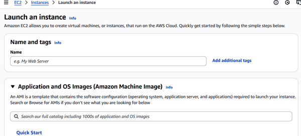
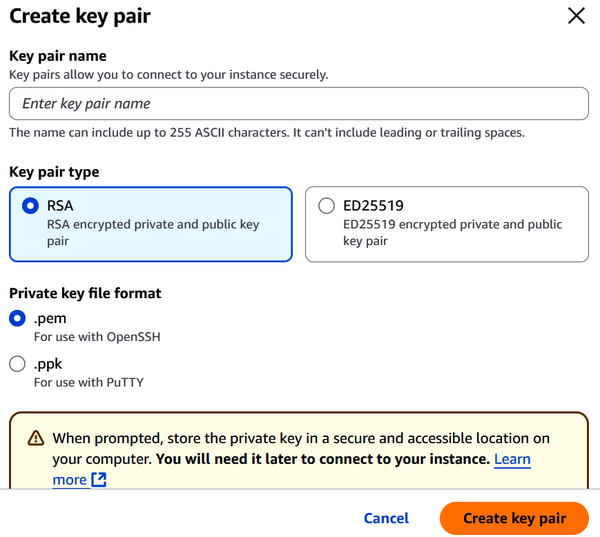
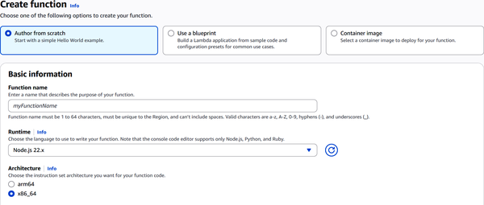
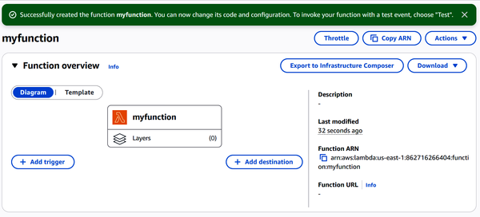

Compute is the engine behind running applications, crunching data, and delivering services. On AWS, compute takes several forms. You’ve got virtual servers through Amazon Elastic Compute Cloud (EC2), container-based setups with Elastic Container Service (ECS) and Elastic Kubernetes Service (EKS), and lightweight, event-driven code with AWS Lambda. Each option strikes a different balance between control, scalability, and how much management you want to handle yourself.
When preparing for the AWS Certified Cloud Practitioner exam, understanding compute is critical. So this chapter walks you through the essentials—how to launch and secure EC2 instances, what containers bring to the table, and how serverless can take infrastructure off your plate entirely. You’ll also get familiar with features like Auto Scaling and Elastic Load Balancing (ELB), which help applications stay responsive and cost-effective, even under changing loads.
In Chapter 2, we saw how Amazon EC2 is one of the core building blocks in AWS’s IaaS offerings. At its simplest, EC2 lets you spin up VMs in the cloud. You can launch them, shut them down, configure them to your needs, and manage them remotely. It’s one of the most widely used services in AWS, and not surprisingly, it shows up frequently on the exam.
A big draw of EC2 is how quickly you can get started. Launching an instance usually takes just a few minutes once configured. But there are some important steps to consider before the launch. You’ll need to select an AMI, choose an instance type (which defines the CPU, memory, and networking capacity), configure the VPC and subnet settings, assign security groups for inbound and outbound traffic, and provision storage for your workloads. These choices determine the performance, cost, and security posture of your instance.
Once launched, you get root access to the instance and can treat it like a regular server. Need to pause and pick things back up later? No problem. When you stop an instance, its data on the boot volume remains intact.
To help with rightsizing, AWS also provides the Compute Optimizer, which analyzes your instance usage and recommends better instance types. This helps avoid overprovisioning, keeps costs in check, and ensures you’re getting the right balance of performance and efficiency for your workloads.
But EC2 is built to handle high availability and fault tolerance. For storage, you can attach persistent block storage volumes. To evenly distribute incoming traffic, there’s a managed load-balancing service. And when demand fluctuates, an automatic scaling system can dynamically adjust the number of running compute instances.
EC2 also gives you flexibility in pricing. On-Demand Instances are pay-as-you-go, which is ideal when you don’t want to commit long term. If you’re looking for lower costs with some commitment, you can choose from Savings Plans. These include Compute Savings Plans (which apply broadly to EC2, Lambda, and Fargate), EC2-specific Savings Plans, and options tailored for Amazon SageMaker, which is used for ML and AI development.
For the deepest discounts, Spot Instances can offer up to 90% savings compared to On-Demand pricing. These are designed for interruptible workloads, such as batch processing, CI/CD pipelines, or other fault-tolerant tasks. However, pricing varies by instance type, region, and demand, and AWS may reclaim your instance at any time if capacity is needed.
Beyond pricing, it’s also important to understand storage. EC2 instances can use Amazon EBS for persistent, detachable block storage that survives instance stops and terminations, or instance store volumes for high-performance but ephemeral storage that is lost when the instance stops or terminates. Choosing the right storage option is key to workload durability and performance.
Finally, AWS has been promoting Graviton-based instances (e.g., c7g, m7g), which use custom Arm-based processors. These instances often deliver better price/performance compared to x86-based instances and are increasingly featured on the exam. Many customers adopt Graviton to reduce costs while maintaining or improving workload efficiency.
So let’s take a look at an EC2 instance—that is, c5.4xlarge. It’s part of the compute-optimized family (that’s the “C” in the name), fifth generation (“5”), and it’s in the 4xlarge size tier. This provides you 16 vCPUs, 32 GB of RAM, and up to 10 Gbps of network bandwidth. This instance type is a good option if your application is CPU-hungry—think scientific modeling, high-performance web servers, or big batch jobs—and you want good performance without overspending.
AWS organizes EC2 instances into several broad families:
General-purpose instances, like the M and T series, strike a balance between CPU usage, memory, and networking. They’re good choices for things like web servers or development environments, which are workloads that don’t spike in just one direction.
Compute-optimized instances (C series) offer a high ratio of CPU performance to cost. If you’re handling intense processing tasks like ad serving, ML inference, and game servers, this is a good choice.
Memory-optimized instances (R, X, and Z series) come with large amounts of RAM, which is suitable for in-memory databases, caching layers, or data-heavy apps.
Storage-optimized instances like the I, D, and H series focus on fast, local storage. This is a good fit for transactional databases (OLTP, or online transaction processing), NoSQL systems, data warehouses, or distributed storage platforms.
Security groups act like virtual firewalls that protect your EC2 instances by controlling the flow of traffic in and out. Rather than blocking traffic, they work by explicitly allowing only the types of traffic you specify. Each rule in a security group defines what kind of traffic is permitted, whether it’s from a specific IP address, a range of IPs, or even another security group. That last option is especially useful for managing secure communication between instances without relying on fixed IP addresses.
For example, when you launch an EC2 instance, one of your first tasks is to connect to it securely to perform updates, fix issues, or configure settings. For Linux-based EC2 instances, the standard way to connect is through SSH, which is a reliable and encrypted command-line protocol.
How you connect depends on your computer. If you’re using macOS or Linux, you’re already set. You will open your terminal and use the built-in SSH client. Windows 10 and newer versions also come with built-in SSH support in the terminal, so the process is just as simple. If you’re using an older version of Windows, you can still connect using a free tool like PuTTY, which provides a user-friendly interface with the same functionality.
Prefer to avoid setting up any software? AWS offers EC2 Instance Connect, a browser-based solution that works on any device and doesn’t require SSH key management or installations. It’s especially helpful when you’re using a shared or unfamiliar computer and need quick access to your instance.
Regardless, AWS security groups are reusable. You can attach the same security group to multiple EC2 instances, and any single instance can have several groups assigned to it. This gives you flexibility to manage access in layers—without duplicating effort.
There’s a catch, though: security groups are tied to a specific region and VPC. If you move to a different region or create a new VPC, you’ll need to set them up again from scratch.
Security group rules act at the network level, which is at the edge. If traffic doesn’t match the rules, it gets dropped before it ever touches your instance.
For a cleaner setup, it’s a good idea to split different types of access into separate security groups. For instance, keep SSH access rules in one group and web traffic rules in another. By doing this, each group stays focused, easier to manage, and more secure. It also makes auditing and troubleshooting a lot simpler down the line.
When configuring security group rules, you’ll work with specific port numbers that correspond to different services and protocols. Understanding these standard port assignments is essential for properly securing your instances while maintaining necessary functions:
Allows secure login to Linux EC2 instances and secure file transfers.
Handles standard, unencrypted web traffic.
Supports encrypted, secure web traffic—commonly used by most modern websites.
Enables remote desktop access to Windows-based EC2 instances.
Let’s see how to create an EC2 instance.
Log in to AWS.
Search for EC2 and click on it.
Select Instances on the left sidebar menu.
Select “Launch an instance.” Figure 9-1 shows the screen for this.

Enter a name for the EC2 instance.
You will select a base image for the EC2 instance, which is the OS. Some of the main ones include Windows, Amazon Linux, macOS, Red Hat, and SUSE Linux.
You will select an instance type. For example, if you choose Amazon Linux, there are dozens available. You will select the one that will meet your performance needs, such as in terms of the CPU, memory, and costs. If you select “Compare instance types,” you can see the differences.
You can use a key pair to securely connect to your instance using SSH. When launching your EC2 instance, select “Create key pair” to generate the credentials needed for secure login.
Figure 9-2 shows the screen for this.

You will enter a name for the key pair and select an encryption type, such as RSA or ED25519. (RSA stands for Rivest, Shamir, and Adleman, who described the algorithm that supports the cryptosystem.) You will also select a file format.
For “Network settings,” you’ll choose the VPC where the instance will reside. If you don’t have a custom VPC, you can use the default one provided by AWS. Next, you select a subnet, which defines the Availability Zone and IP address range. You’ll also decide whether to enable “Auto-assign public IP,” which allows the instance to be reachable from the internet. For security, you can create or select an existing security group.
In “Configure storage,” you’ll define the size and type of the root volume, which is the main disk attached to your VM. By default, EC2 uses EBS for this purpose. You can increase the size from the default (usually 8 GB or more) based on your application’s needs.
Select “Launch instance.” It will take 10 to 20 seconds for it to be activated.
In addition to manually managing Spot Instances for batch jobs, AWS also provides AWS Batch. This is a fully managed service designed for batch processing workloads. AWS Batch takes care of provisioning and scaling compute resources—including both On-Demand and Spot Instances—so you don’t have to manage the underlying infrastructure. It handles job scheduling, cost optimization, and workload orchestration. This makes it well-suited for tasks like large-scale data processing, scientific simulations, and rendering. Since AWS Batch is considered a key compute-related service, it’s important to be familiar with it for the CLF-C02 exam.
Building an application rarely starts with a blank slate. Developers lean heavily on external libraries, frameworks, and modules to accelerate the process. Some examples include routing tools, model–view–controller (MVC) frameworks, or backend helpers that come preloaded with security and async capabilities. One framework might handle cross-platform frontend work, while another streamlines API development in C# or whatever your stack calls for.
In addition to frameworks, many teams use containers to package code and dependencies together. Containers ensure consistent environments across development, testing, and production. This helps to reduce the classic “works on my machine” problem. Compared to VMs, containers start up faster, use fewer resources, and provide improved portability. These benefits make them a natural fit for microservices architectures and CI/CD pipelines, where speed, scalability, and reliability are critical.
But pulling in those dependencies can be challenging for the following reasons:
Every library comes with its own way of doing things: configs, syntax, and patterns you have to learn from scratch.
Some tools are so opinionated that they box you into their way of thinking, which limits how much you can tweak or customize.
Dependencies often pack in more features than you actually use, which can drag down your application’s performance.
Updates can break applications. One change in a third-party package can leave you scrambling to patch things up.
When you rely on someone else’s code, you’re also trusting that they’re handling security properly. That’s not always a safe bet, especially with smaller, less-maintained projects.
Containers can make a lot of these problems easier to manage. When you use something like Docker to bundle your code, configs, and dependencies into a single container image, you create a clean, portable unit that works the same whether it’s running on Windows, Linux, your laptop, or the cloud. This consistency means fewer unpleasant surprises when moving between environments.
Once your app lives inside a container, an orchestration layer—like Kubernetes or AWS ECS—can take over. It’ll handle the nitty-gritty of scaling, load balancing, rolling updates, and keeping your services healthy without much hand-holding.
AWS brings a full toolbox for running containers at scale. Whether you’re after control, managed simplicity, or something in between, AWS has a container service that fits.
ECS makes it easier to run containers on AWS. It’s fully managed and built to scale, so you don’t have to worry about spinning up servers, patching them, handling networking, or keeping track of cluster health. You define your containers, and ECS handles the rest. One key advantage with ECS is how well it integrates with other AWS services. It ties into IAM, VPC, CloudWatch, and load balancers.
At the core of ECS is the concept of a task definition. This is a JSON script that tells ECS what container images to run, how much CPU allocation and memory to give them, which ports to expose, and what roles or volumes they need. You can launch these as tasks or long-running services inside ECS clusters.
Clusters themselves are logical groups of compute resources. You can use EC2 instances if you want direct control over the underlying infrastructure and OS configuration. ECS schedules, launches, stops, and monitors your containers automatically to keep things running smoothly.
If managing EC2 instances sounds like too much, Fargate is a good option. You specify your app’s requirements—CPU, memory, network settings—and Fargate figures out the infrastructure part. You don’t see or manage the servers at all.
ECS also supports Fargate Spot, which uses spare capacity for lower cost. It’s a good option for flexible workloads that can handle the occasional interruption (you’ll get a two-minute heads-up when it happens). Every task runs in its own isolated environment, with built-in monitoring and load balancing support.
ECS has auto-scaling features. If you’re using EC2-backed clusters, it watches metrics like how full your capacity providers are and adjusts your Auto Scaling groups to match demand. That way, you don’t end up overpaying for idle resources or running short when traffic spikes.
For running services, ECS can scale the number of tasks based on CPU and memory usage, scheduled rules, or predictive patterns. This helps you keep costs in check while maintaining performance.
Kubernetes has become a popular platform for running containers at scale. It handles everything from deploying and scaling applications to managing their entire lifecycle. Under the hood, it groups containers into pods (essentially units of work) and spreads them across a cluster of nodes. This setup gives you high availability, built-in fault tolerance, and the ability to describe your infrastructure using clean, declarative configs.
However, managing Kubernetes can be complicated. That’s where EKS comes in. It handles the control plane for you and spreads it across three Availability Zones for better resilience. If anything fails, EKS quietly replaces it behind the scenes.
You get a fully managed, single-tenant Kubernetes endpoint that’s 100% compatible with upstream Kubernetes. This means you can plug in all your favorite community tools and use the same patterns you’re already familiar with.
EKS also ties into key AWS services. You can route traffic through ELB, manage access with IAM, and set up fine-grained networking for your pods using the AWS Container Network Interface (CNI) plugin and your VPC.
EKS also offers Auto Mode, where AWS goes even further by managing the data plane too. It handles everything from networking and storage to patching and auto-scaling.
The term “serverless” can throw people off. It doesn’t mean there are no servers. Instead, it means you don’t have to manage them. With serverless, you write code, and the cloud provider takes care of the rest: provisioning, scaling, maintenance, and uptime. Everything runs behind the scenes, so you can focus on building and shipping features. Your application scales automatically as demand changes, and you’re only billed for the exact time your code runs. That makes serverless a good choice for projects that need to move fast, stay flexible, and use resources efficiently.
In this book, we’ve already seen a variety of serverless systems:
Amazon S3 gives you serverless file storage. You upload files, and it scales automatically. No need to think about disk space or servers.
Amazon DynamoDB offers a serverless NoSQL database. You define your table, and AWS handles throughput, replication, and scaling.
Another popular one is Lambda. It is Amazon’s implementation of function as a service (FaaS), which is a cloud computing model where you run code in response to events without managing servers or infrastructure. Instead of provisioning a VM like you would with EC2, you upload your function and define a trigger (such as an HTTP request or a file upload), and AWS takes care of the rest. This includes running your code when needed, scaling automatically, and stopping when the job is done.
Lambda supports many popular programming languages like Node.js, Python, Java, C# (via .NET Core or PowerShell), and Ruby. And thanks to the custom runtime API, you can use languages like Rust or Go. If you prefer working with containers, Lambda has support for that too, although ECS or Fargate might be a better fit for full-fledged container workloads.
Monitoring is baked in through CloudWatch, so you can track what your functions are doing without bolting on extra tools.
Here are a couple of real-world examples of how Lambda is used:
Let’s say someone uploads a photo to S3. That upload can trigger a Lambda function to create a thumbnail, save it back to S3, and optionally log some metadata—like file size or upload time—to DynamoDB.
Instead of writing a cron job on a Linux box, you can schedule a Lambda function using EventBridge. It can run hourly, daily, weekly—whatever you need—without you having to maintain a server.
You can pair Lambda with API Gateway to create scalable, cost-efficient web or mobile backends. Each incoming request triggers a function execution.
Let’s now see how to create a Lambda function.
Log into AWS. Search for Lambda. Select it.
Choose “Create function.” You will be taken to the setup screen, which you can see in Figure 9-3.

You’ll see three options: “Author from scratch,” “Use a blueprint,” and “Container image.” Select “Author from scratch.”
Enter a description name for the Lambda function. It can be from 1 to 64 characters, but it can only have letters, numbers, hyphens, and underscores.
Select a language.
Choose the architecture, which is either x86_64 (default) or arm64 (Graviton2).
Use the default option to allow Amazon to collect logs using CloudWatch Logs.
Choose “Create function.” You will be taken to a screen that allows for managing the Lambda function, which you can see in Figure 9-4.

Scroll down and you’ll see a menu. The Code option shows a “Hello world” Lambda function. Here, you can enter your own code. You can also upload code from a .zip file or an S3 bucket.
You can select “Test to run the Lambda function.”
When you are finished testing the function, you can select Deploy to put it into production.
Compute elasticity in AWS refers to a cloud system’s ability to automatically scale compute resources up or down in response to changing workload demands. Whether it’s a predictable sales spike or unexpected viral traffic, AWS can dynamically adjust infrastructure to match the load. This elasticity is a key architectural advantage of cloud computing. Two AWS services help make it happen: Auto Scaling and ELB.
Auto Scaling is AWS’s mechanism for right sizing compute capacity in real time. You define parameters like minimum, maximum, and desired EC2 instance counts within an Auto Scaling Group (ASG), and then set policies based on metrics such as CPU utilization or request rate. As demand increases, Auto Scaling adds instances; when demand drops, it removes them. While this is most often thought of as horizontal scaling (adding or removing instances), modern automation tools can also adjust instance sizes in some scenarios, enabling limited vertical scaling.
Beyond reactive scaling, AWS also offers predictive scaling, which uses ML models to anticipate demand and proactively adjust capacity. This helps applications stay ahead of traffic spikes rather than simply reacting to them. Auto Scaling also improves fault tolerance by continuously monitoring instance health and automatically replacing any that fail. You can fine-tune behavior using scheduled scaling (for predictable loads), target tracking (for specific metrics), or step scaling (for gradual changes).
ELB complements Auto Scaling by distributing incoming traffic across multiple healthy compute targets—like EC2 instances, containers, or IP addresses—spanning multiple Availability Zones. ELB ensures high availability and fault tolerance by routing traffic only to resources that pass health checks and scaling itself to handle varying traffic volumes.
There are multiple types of ELBs:
Application Load Balancer (ALB) for advanced HTTP/HTTPS routing
Network Load Balancer (NLB) for ultra-low-latency Transmission Control Protocol (TCP) traffic
Gateway Load Balancer (GWLB) for integrating third-party network appliances
Each type offers features like SSL/TLS termination, session stickiness, and integration with AWS WAF (Web Application Firewall) for enhanced performance and security.
To extend elasticity beyond servers, AWS also offers Lambda Layers, which let developers package and share dependencies, libraries, or custom code across multiple Lambda functions. This reduces duplication, simplifies updates, and makes serverless applications more efficient—an increasingly common topic on AWS exams.
When used together, Auto Scaling and ELB create a robust and cost-effective architecture. New instances launched by Auto Scaling are automatically registered with the load balancer; those terminated are cleanly removed. ELB continuously directs traffic only to healthy instances, while Auto Scaling ensures there’s enough capacity to meet demand without overspending.
In this chapter, we learned how AWS approaches compute, from the flexibility of EC2 instances to the streamlined deployment of containers and the hands-off simplicity of serverless functions like Lambda. We also touched on critical features like Auto Scaling and ELB, which help your applications adapt to demand without burning through your budget.
In the next chapter, we’ll take a look at storage and database services for AWS.
To check your answers, please refer to the “Chapter 9 Answer Key”.
Which Elastic Compute Cloud (EC2) instance type is best suited for compute-heavy workloads?
T series
R series
C series
M series
Which service allows Kubernetes orchestration in a fully managed environment?
EC2
Lambda
Amazon Elastic Kubernetes Service (EKS)
AWS Outposts
What AWS service would you use to scale EC2 instances automatically?
Route 53
Auto Scaling
Amazon Virtual Private Cloud (VPC)
CloudFront
What is the primary function of Elastic Load Balancing (ELB)?
To back up data across Regions
To distribute incoming traffic across multiple resources
To encrypt files in Simple Storage Service (S3)
To provide caching for EC2 instances
In Amazon EKS, what is the smallest deployable unit?
Container
Node
Pod
Task